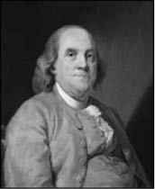
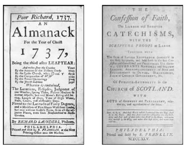

Benjamin Franklin, Ressam Joseph Siffred Duplessis, 1778
Benjamin Franklin (1706-1790)
“Uzun bir hayat yeteri kadar iyi olmayabilir, ama iyi bir hayat yeteri kadar uzundur.”
Amerikalı düşünür, biliminsanı, devlet adamı, yazar... Benjamin Franklin, sabun ve mum imal eden, on yedi çocuklu bir ailenin onuncu oğlu olarak 17 Ocak 1706’da Boston’da doğdu. Seksen dört yıllık hayatına çok şey sığdırdı.
1730 tarihinde bir basımevi kurarak “Fakir Richard’ın Almanak’ı”nı (Poor Richard’s Almanac) Richard Soun-ders imzasıyla yayımlamaya başladı. Atasözleri, özdeyişler, öğütler ve küçük öykülerden oluşan bu derleme büyük ilgi gördü.
“Kötü bir komşudan ve sinirli bir insandan, Kör bir iğneden ve kırık bir bıçaktan, Kefil olmaktan ve boş bir keseden, Tüten bir bacadan ve huysuz bir attan, Kör bir jiletten ve zayıf bir bellekten,
Sızlayan bir vicdandan ve bitli bir yataktan, Dirseğime ve dizime gelecek bir darbeden, Bütün bunlardan, Ulu Tanrım, koru beni!”

Kütüphane, hastane ve yangına karşı sigorta şirketi kurdu. 1736’da Philadelphia meclis sekreteri olarak siyasete girdi. Amerika’da İngilizlerin yönettiği posta servisinin genel müdürlüğünü yaptı.
Elektrik üzerine yaptığı çalışmalar bilim tarihine ışık tuttu, elektrik yüklerindeki artı ve eksi uçlarını keşfetti ve elektriğin korunumu ilkesini ortaya attı.
Elektriğin varlığından bahsetmeye başladığında, çok gereksiz görülen bu keşfi için çevresindekiler alaycı bakışlarla “Bu kadar uğraşıp yaptığın bu icadın neye faydası var ki?” diye sordular.
Benjamin Franklin, bugün ampul başta olmak üzere pek çok alanda kullandığımız elektriğin gelecekteki önemini ve bu buluşlarının ileride gerçekleştirilecek keşiflere bir başlangıç oluşturacağını çevresindekilere anlatmak için şöyle der: “Çocuğun ne faydası var, hiç düşündünüz mü? Ama o ileride belki büyür ve bir insan olur!”
Fırtınalı bir akşam, oğlu ile birlikte havalandırdığı uçurtma deneyi sonucunda elde ettiği bilgilerle paratoneri buldu.
Amerikan Kongresi’ne milletvekili seçilerek Bağımsızlık Bildirgesi başta olmak üzere, Washington, Jefferson, Adams, Hamilton, Madison gibi isimlerle Amerika’nın İngiliz sömürgesinden kurtulmasında ve yeni yeşeren siyasal ve toplumsal yapısının kurulmasında önemli rol oynadı.
Amerikan Anayasası oluşturulurken, Kongre’de anayasa hakkında açıklama yapan Franklin’e “halkın saadetleri peşinden gitmesi” ibaresi hakkında eleştiri gelir. Kürsüye doğru hızla ilerleyen bir adam, “O kelimelerin hiçbir anlamı yok” diye bağırır. “Bu sözlerin garanti ettiğini söylediğin saadet nerede, bize ondan bahset!”
Benjamin Franklin hafifçe gülümser ve şu cevabı verir:
“Dostum! Anayasa, Amerikan halkına sadece saadetlerin peşinde gitme hakkını garanti ediyor. Onu yakalayacak olan ise sensin.”
1775-1783 Amerika’nın Bağımsızlık Savaşı sonunda barış görüşmeleri için gittiği İngiltere’den döndükten bir süre sonra, 17 Nisan 1790’da öldü.
Bir gün Benjamin Franklin’e ruhun ölümsüzlüğü hakkında ne düşündüğünü sorarlar. O da şöyle cevap verir:
“Bugüne kadar vakit bulup bu meseleyle meşgul olamadım, bundan sonra olmayı da lüzumsuz buluyorum. Çünkü ihtiyarım, nasıl olsa pek yakında hiçbir zahmete gerek kalmadan gerçeği öğreneceğim.”
Benjamin Franklin’den...
“Görmek kolay, önceden görmek zordur.”
“insanlar her zaman kahraman olamazlar, ama her zaman insan olabilirler.”
“Demirci ustası ipek önlük takmaz.”
“Esin perileri sabahı sever.”
“Resimlere ve kavgalara uzaktan bakmak en iyisidir.”
“Bir koyunum ve bir ineğim olduğundan beri herkes bana selam veriyor.”
“Kraliyet tacı baş ağrısını iyileştirmez.”
“Uçmayan kuş kolay vurulur.”